Daily arXiv Report
← Index
· ← Previous · Next →
Papers 121–140
Authors: Seyyed Jabbar Mousavi, Vivek Unikandanunni, Niccolo Sellati, Paolo Barone, Martina Basini, Steven L. Johnson, Andrey Shalit, Peter Hamm, Mattia Udina, Thomas Feurer
Type: experiment · Category: other · PDF: https://arxiv.org/pdf/2604.28066v1
Analysis basis: abstract only; PDF text extraction failed or PDF unavailable
Why it may be interesting. not directly relevant
Summary. The researchers used 2D Raman-terahertz spectroscopy to demonstrate that ferroelastic domain walls in LaAlO3 break inversion symmetry, enabling previously hidden anharmonic phonon coupling. This discovery provides a way to probe subtle symmetry-breaking effects in complex materials using nonlinear spectroscopy.
Detailed structure
**Main problem.** Investigating whether local inversion symmetry breaking at ferroelastic domain walls enables anharmonic phonon coupling that is otherwise absent in the centrosymmetric bulk.
**Main result.** Direct evidence of mechanical and electrical anharmonic coupling between A1g and Eg phonons was observed in LaAlO3, driven by local symmetry breaking at domain walls.
**Method.** Two-dimensional Raman-terahertz spectroscopy was used to detect cross-peaks in the spectra.
**Model / system.** The physical system is ferroelastic LaAlO3, specifically focusing on the lattice dynamics at twin domain walls where inversion symmetry is locally broken.
**Key observables.** Cross-peaks in two-dimensional Raman-terahertz spectra, A1g Raman-active phonon, and Eg infrared-active phonon.
**Important parameters / regimes.** Local inversion symmetry breaking at domain walls; mechanical and electrical anharmonicity.
**Assumptions / limitations.** The bulk crystal is assumed to be centrosymmetric, with symmetry breaking restricted to the domain walls.
**Paper structure.** The paper introduces the concept of local symmetry breaking in ferroelastic domain walls, presents experimental evidence using 2D Raman-THz spectroscopy, and attributes the observed signals to specific phonon coupling mechanisms.
Abstract
In ferroelastic materials, spontaneous symmetry breaking leads to the formation of twin domains. Although the bulk crystal typically remains centrosymmetric, inversion symmetry can be locally broken at the domain walls, potentially changing phonon selection rules and enabling local anharmonic phonon coupling. Here we report direct evidence of such anharmonic coupling in ferroelastic LaAlO$_3$ using two-dimensional Raman-terahertz spectroscopy. We attribute the cross-peaks observed in the two-dimensional spectra to both mechanical and electrical anharmonicity between the $A_{1g}$ Raman-active phonon and the $E_g$ phonon, which acquires finite infrared activity through local inversion symmetry breaking at ferroelastic domain walls. These findings provide new insight into the complex lattice dynamics of ferroelastic materials and highlight the potential of two-dimensional Raman-terahertz spectroscopy to uncover subtle symmetry breaking through the detection of intrinsically weak anharmonic signals.
↑ back to top
Authors: Ali Jaberi, Yonatan Kurniawan, Robert Black, Shayan Mousavi M., Kabir Verma, Zoya Sadighi, Santiago Miret, Jason Hattrick-Simpers
Type: both · Category: disordered systems and neural networks · PDF: https://arxiv.org/pdf/2604.27266v1
Analysis basis: abstract only; PDF text extraction failed or PDF unavailable
Why it may be interesting. not directly relevant
Summary. This paper introduces AutoREC, a Python package that uses reinforcement learning to automatically create circuit models for interpreting electrochemical data. By treating model generation as a decision-making task, it eliminates the need for manual expert intervention. This automation is a key step toward enabling self-driving laboratories for materials science.
Detailed structure
**Main problem.** Automating the generation of equivalent circuit models (ECMs) from electrochemical impedance spectroscopy (EIS) data to replace manual, trial-and-error identification processes.
**Main result.** The development of AutoREC, an open-source platform that uses reinforcement learning to achieve a 99.6% success rate on synthetic data and demonstrates strong generalization to experimental battery and corrosion data.
**Method.** The authors formulate ECM construction as a sequential decision-making problem using a Markov Decision Process and implement a Double Deep Q-Network with prioritized experience replay and a dead-loop mitigation strategy.
**Model / system.** The system involves electrochemical impedance spectroscopy (EIS) data from various electrochemical systems, including batteries, corrosion, oxygen evolution reaction, and CO2 reduction.
**Key observables.** Equivalent circuit models (ECMs) and impedance spectra.
**Assumptions / limitations.** The paper discusses the existence of limitations in current agent designs and potential strategies for future mitigation.
**Paper structure.** Introduction of the AutoREC package, formulation of the ECM construction as a Markov Decision Process, implementation details of the RL agent (Double DQN), evaluation on synthetic and experimental datasets, and discussion of limitations and future work.
Abstract
This paper introduces AutoREC, an open-source Python package for developing reinforcement learning (RL) agents to automatically generate equivalent circuit models (ECMs) from electrochemical impedance spectroscopy (EIS) data. While ECMs are a standard framework for interpreting EIS data, traditional identification is typically based on manual trial-and-error, which requires domain experts and limits scalability, particularly in autonomous experimental pipelines such as self-driving laboratories. AutoREC addresses this challenge by formulating ECM construction as a sequential decision-making problem within a Markov Decision Process framework. It implements a Double Deep Q-Network with prioritized experience replay, along with a dedicated dead-loop mitigation strategy, to efficiently explore a complex action space for circuit generation. To demonstrate the capabilities of the platform, we trained an RL agent using AutoREC and evaluated its strengths and limitations across diverse datasets, while also discussing possible strategies to mitigate these limitations in future agent designs. The trained agent achieved a success rate exceeding $99.6\%$ on synthetic datasets and demonstrated strong generalization to unseen experimental EIS data from batteries, corrosion, oxygen evolution reaction, and CO$_2$ reduction systems. These results position AutoREC as a promising platform for adaptive and data-driven ECM generation, with potential for integration into automated electrochemical workflows.
↑ back to top
Authors: Anshika Dhiman, Sanbo Qin, Huan-Xiang Zhou
Type: both · Category: other · PDF: https://arxiv.org/pdf/2604.27913v1
Analysis basis: abstract only; PDF text extraction failed or PDF unavailable
Why it may be interesting. not directly relevant
Summary. This paper investigates how salt concentrations affect the structural properties of the protein BSA as measured by SAXS. By combining advanced computational modeling with molecular dynamics, the authors show that these effects are driven by the complex interaction between ions and the surrounding hydration water. This provides a clearer understanding of how salt environments influence biomolecules.
Detailed structure
**Main problem.** The challenge of accurately extracting information regarding the effects of salt concentrations on protein structures from Small-angle X-ray scattering (SAXS) data.
**Main result.** The study demonstrates that the complex effects of salt on the SAXS of BSA arise from the interplay between ions and hydration water, providing a unified picture of protein-ion-water interactions.
**Method.** The researchers combined the newly developed FMAPIq approach with explicit-solvent all-atom molecular dynamics simulations.
**Model / system.** The physical system studied is bovine serum albumin (BSA) in protein solutions at various salt concentrations, involving the interaction between the protein, ions, and hydration water.
**Key observables.** Small-angle X-ray scattering (SAXS) profiles and protein-ion-water interaction dynamics.
**Important parameters / regimes.** Salt concentrations and the role of hydration water.
**Assumptions / limitations.** The study utilizes explicit-solvent all-atom molecular dynamics simulations to model the environment.
**Paper structure.** The paper introduces the problem of salt effects on proteins, describes the application of the FMAPIq approach and molecular dynamics simulations, and concludes with a general picture of protein-ion-water interactions.
Abstract
Salts are an integral part of the environment for living systems and, therefore, understanding their effects on proteins and other biomolecules is of fundamental interest. Small-angle X-ray scattering (SAXS) of protein solutions can provide valuable information on salt effects, but extracting this information has been a significant challenge. For example, SAXS data of bovine serum albumin (BSA) at various salt concentrations were fit to three different spherical models. Here we combined the newly developed FMAPIq approach with explicit-solvent all-atom molecular dynamics simulations to show that the complex effects of salt on the SAXS of BSA originate from the interplay of ions and hydration water, leading to a general picture of protein-ion-water interactions.
↑ back to top
Authors: Jamie Swain, Cyprien Bone, Matthew T. Darby, Ewan Galloway, Keith T. Butler
Type: theory · Category: disordered systems and neural networks · PDF: https://arxiv.org/pdf/2604.27709v1
Analysis basis: abstract only; PDF text extraction failed or PDF unavailable
Why it may be interesting. not directly relevant
Summary. The researchers developed a fine-tuned large language model called CrystaLLM-pi to navigate the complex chemical space of MAX phases. By using specific conditioning vectors, they successfully targeted regions likely to produce stable MXenes, significantly increasing the discovery rate of new materials.
Detailed structure
**Main problem.** Efficiently exploring the vast compositional space of MAX phases to identify new, stable candidates for MXene production.
**Main result.** The CrystaLLM-pi model, using a two-dimensional conditioning vector, doubled the generation rate of novel stable structures and produced candidates with DFT-validated stability.
**Method.** Fine-tuning a large language model (CrystaLLM-pi) on 6,179 MAX phases and employing a conditioning vector based on MXene derivative count and A-site binding energy.
**Model / system.** The system involves MAX phases (M_{n+1}AX_n), which are layered ternary carbides/nitrides that serve as precursors to MXenes.
**Key observables.** Energy above hull (E_hull), MXene derivative count, and A-site binding energy.
**Important parameters / regimes.** E_hull < 0.050 eV/atom for stability; two-dimensional conditioning vector.
**Assumptions / limitations.** The model assumes that the learned patterns from the training set of 6,179 phases are sufficient to generalize to out-of-sample structures.
**Paper structure.** The paper introduces the problem of MAX phase discovery, describes the CrystaLLM-pi architecture and training data, details the conditioning method for targeted generation, and validates the results using DFT stability calculations.
Abstract
MAX phases (M$_{n+1}$AX$_n$), precursors to MXenes, span a vast compositional space, motivating efficient computational screening for synthesisable candidates. We employ CrystaLLM$-π$, a large language model fine-tuned on 6,179 double transition-metal MAX phases, and demonstrate its ability to generate out-of-sample structures consistent with known experimental trends. Using a conditioning vector with two dimensions (a statistically derived MXene derivative count and a surrogate for A-site binding energy), the model was able to target MXene-favourable regions of phase space for generation. Specific condition vectors double novel stable structure generation rates versus unconditioned baselines. Of ten compositionally novel candidates, five exhibit DFT-validated stability ($E_{hull} < 0.050$ eV/atom). This work showcases the potential for autoregressive generative models to explore targeted materials' spaces, offering a scalable framework for accelerated discovery in compositionally complex systems.
↑ back to top
Authors: Tofayel Ahammad Ovee, Daniel Kroeger, Jean-François Louf
Type: experiment · Category: other · PDF: https://arxiv.org/pdf/2604.27240v1
Analysis basis: abstract only; PDF text extraction failed or PDF unavailable
Why it may be interesting. not directly relevant
Summary. The paper presents a new way to design hydrogels for bioelectronics by using a specific pore structure to prevent ion dissipation. By controlling both connectivity and confinement, the researchers created a material that generates significant electrical power from mechanical movement, even enough to trigger nerve responses.
Detailed structure
**Main problem.** Piezoionic hydrogels suffer from low output efficiency because rapid, symmetric ion redistribution dissipates the charge gradients needed for signal generation.
**Main result.** A confinement-connectivity design strategy using a mesoporous PVA-glycerol-CB[5] network enables high-efficiency piezoionic transduction, producing up to 180 mV and 9 mA and driving electromyographic responses in nerves.
**Method.** The researchers implemented a layered Negative-Neutral-Positive architecture in a supramolecular mesoporous network to simultaneously increase pore fraction and reduce pore size.
**Model / system.** A supramolecular poly(vinyl alcohol)-glycerol-cucurbit[5]uril (PVA-glycerol-CB[5]) mesoporous hydrogel with a layered architecture designed to regulate ionic transport.
**Key observables.** Peak voltage (~180 mV), peak current (~9 mA), and electromyographic responses in the mouse sciatic nerve.
**Important parameters / regimes.** Pore fraction, characteristic pore size, and the coupling of pore connectivity and confinement.
**Paper structure.** The paper introduces a design strategy for hydrogels, describes the implementation of the mesoporous network, demonstrates the resulting electrical output under compression, and validates the device via biological interface testing.
Abstract
Piezoionic hydrogels offer a route to mechanically driven bioelectronic interfaces, but their output is limited by rapid, symmetric ion redistribution that dissipates charge gradients. In biological electrocytes, efficient signal generation arises from the coupling of ion selectivity with spatial confinement that regulates transport. Here, we introduce a confinement-connectivity design strategy for piezoionic hydrogels, implemented through a supramolecular poly(vinyl alcohol)-glycerol-cucurbit[5]uril (PVA-glycerol-CB[5]) mesoporous network with a layered Negative-Neutral-Positive architecture that simultaneously increases pore fraction while reducing characteristic pore size. This architecture constrains ionic redistribution while maintaining a large mobile-ion reservoir, enabling deformation-driven charge separation. Compression generates peak outputs of ~180 mV and ~9 mA and elicits synchronized electromyographic responses in the mouse sciatic nerve without external power. These results establish confinement-connectivity coupling, rather than bulk conductivity, as a materials design framework in which coupling pore connectivity and confinement governs piezoionic transduction.
↑ back to top
Authors: Aqsa Fayyaz, Ulises Martin Diaz, Jianyu Dai, Homero Castaneda, Chenglin Wu
Type: both · Category: other · PDF: https://arxiv.org/pdf/2604.27114v1
Analysis basis: full PDF text, analyzed in chunks
📷 Fig 1
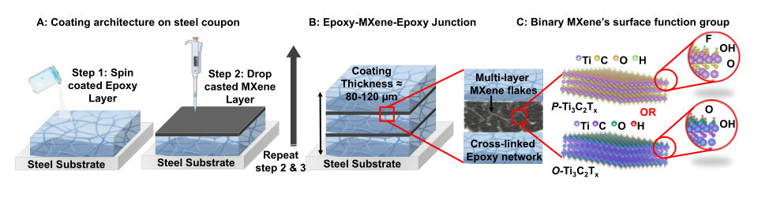
Figure 1: Schematic illustration of the fabrication process of multilayer coating, illustrating hierarchical organization from macroscopic layer assembly to microscopic interfacial interactions and atomic-scale surface functionalization.
📷 Fig 2
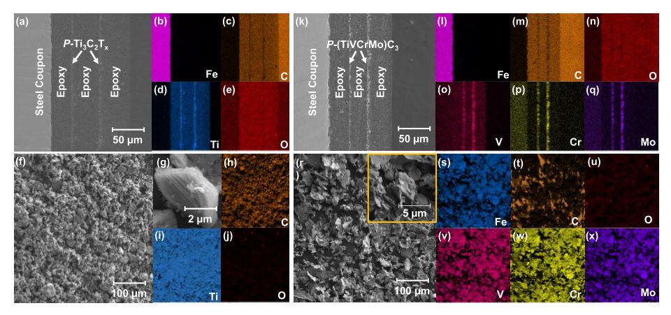
Figure 2: SEM micrographs and corresponding EDS analyses of fabricated multilayer coatings: (a) cross-sectional view showing the five-layer architecture of P-Ti3C2Tx; (b–e) corresponding EDS elemental maps; (f) top-view morphology of the P-Ti3C2Tx layer with (g–j) elemental distribution; (k) cross-sectional SEM image of the P-(TiVCrMo)C3 coating and (l–q) corresponding EDS maps; (r) top-view morphology of the P-(TiVCrMo)C3 layer with (s–x) EDS mapping.
📷 Fig 3
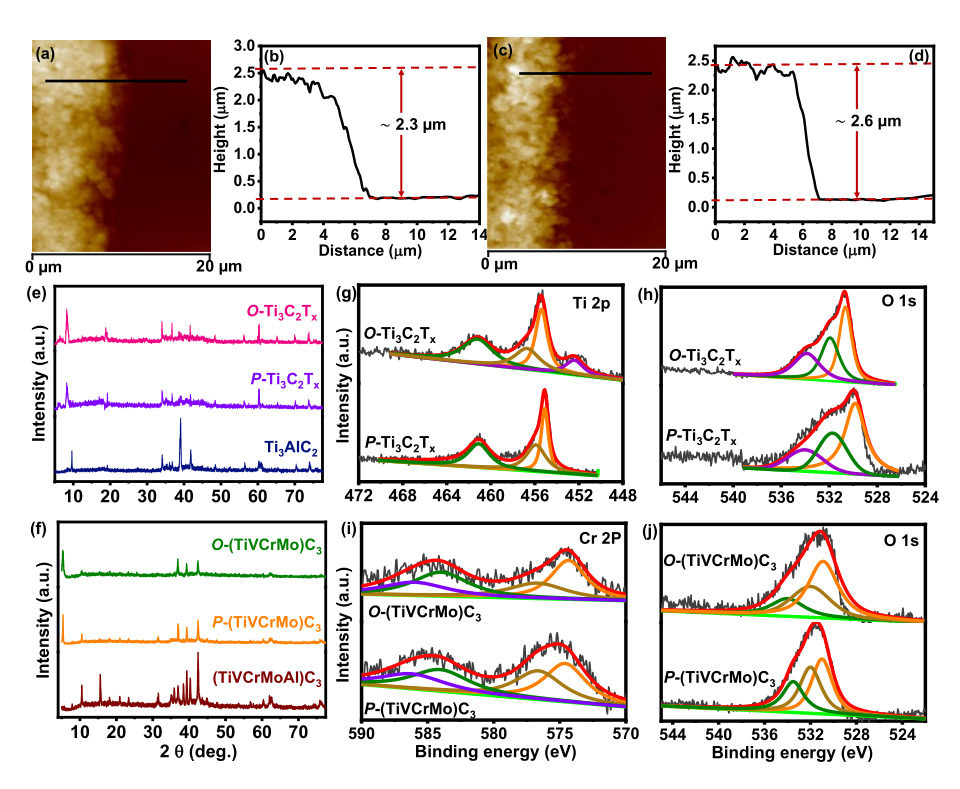
Figure 3: AFM characterization of the MXene–epoxy interface: (a,c) surface topography image showing the step between the epoxy substrate and the deposited P-Ti3C2Tx and P-(TiVCrMo)C3 layer respectively, and (b,d) corresponding height profile. XRD plots (e) for binary MXene and (f) for medium-entropy MXene. XPS Analysis (g) high resolution spectra of Ti 2p (h) O 1s of binary MXene and (i) high resolution spectra of Cr 2p (j) high resolution spectra of O 1s of medium-entropy MXene.
📷 Fig 4
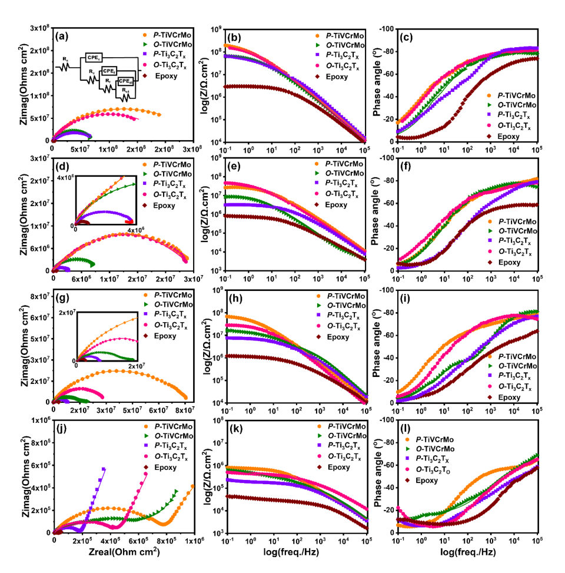
Figure 4: Nyquist and Bode plots of various MXene–epoxy coatings P-Ti3C2Tx, and O-Ti3C2TX, P-(TiVCrMo)C3, and O-(TiVCrMo)C3 recorded in 3.5 wt.% NaCl solution under different conditions: (a–c) 1 h immersion, five-layer coatings; (d–f) 1 h immersion, three-layer coatings; (g–i) 24 h immersion, five-layer coatings; (j–l) 24 h immersion, three-layer coatings.
📷 Fig 5
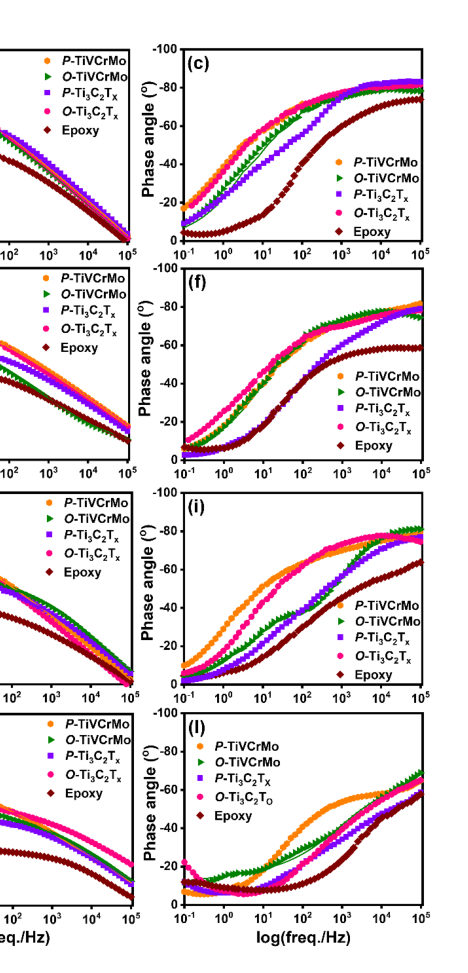
Figure 4(d-f) shows the Nyquist and bode plots of the 3 layers 1 h immersion, the P-
📷 Fig 6
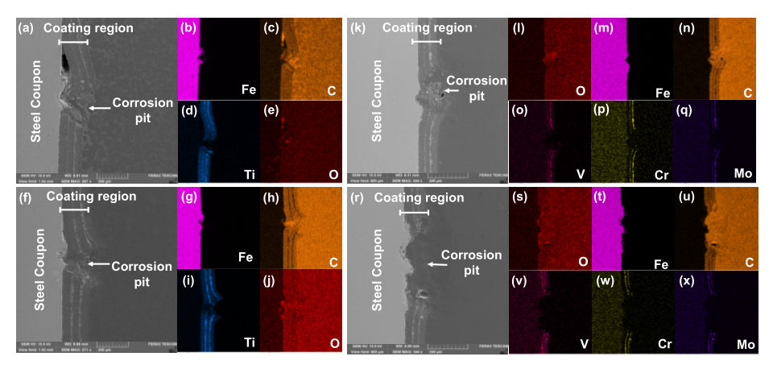
Figure 5: SEM micrographs and corresponding EDS analyses of scratched multilayer coatings after EIS testing: (a) cross-sectional view showing the five-layer architecture of P-Ti3C2Tx with (b–e) corresponding EDS elemental maps; (f) cross-sectional view of the O-Ti3C2Tx layer with (g–j) elemental distributions; (k) cross-sectional SEM image of the P-(TiVCrMo)C₃ coating with (l–q) corresponding EDS maps; and (r) cross-sectional view of the O-(TiVCrMo)C₃ layer with (s–x) EDS elemental mapping.
📷 Fig 7
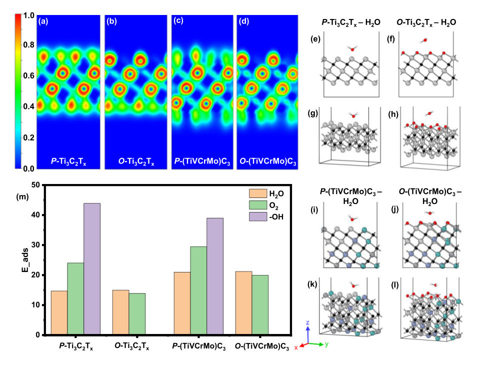
Figure 6: (a-d) Electron localization function (ELF), (e-l) optimized adsorption configurations, (m) adsorption energies of oxygen-containing species (H2O, O2, and OH).
Why it may be interesting. not directly relevant
Summary. This study demonstrates that the effectiveness of MXene-based anti-corrosion coatings depends heavily on whether the MXene is a simple binary structure or a complex medium-entropy alloy. While oxygenation helps protect against corrosion in standard Ti3C2Tx, it actually degrades the performance of more complex multi-metal MXenes by interfering with their ability to form protective oxide layers.
Detailed structure
**Main problem.** Investigating how surface functionalization (oxygenation) and compositional complexity (binary vs. medium-entropy) affect the corrosion protection of MXene-reinforced epoxy coatings.
**Main result.** Oxygenation improves corrosion resistance in binary Ti3C2Tx MXenes but impairs it in medium-entropy (TiVCrMo)C3 MXenes; the latter performs best in its pristine state due to its ability to form protective Cr/Mo-rich oxides.
**Method.** Experimental techniques include EIS, SEM-EDS, AFM, XPS, and XRD, complemented by DFT calculations and Electron Localization Function (ELF) analysis.
**Model / system.** A nacre-inspired multilayer epoxy coating reinforced with either binary (Ti3C2Tx) or medium-entropy (TiVCrMo)C3 MXene layers, applied to C1010 carbon steel substrates.
**Key observables.** Impedance modulus (|Z|), coating resistance (R_coat), charge transfer resistance (R_ct), interlayer spacing, and adsorption energies of O2 and H2O.
**Important parameters / regimes.** Surface terminations (P- vs O-), number of coating layers (3L vs 5L), and elemental composition (binary vs medium-entropy).
**Figures summary.** Figures likely show SEM cross-sections of stratified layers, EDS elemental maps, XRD peak shifts for interlayer spacing, XPS spectra for chemical states, and EIS Bode/Nyquist plots showing impedance changes.
**Paper structure.** The paper introduces the problem of steel corrosion, describes the fabrication of multilayer MXene-epoxy coatings, presents characterization of morphology and chemistry, compares electrochemical performance of different MXene variants, uses DFT to explain the mechanistic differences in oxygen adsorption, and concludes with design principles.
Abstract
Developing scalable and environmentally benign anticorrosion coatings is critical for protecting steel infrastructure in chloride-rich environments. Here, a nacre-inspired multilayer epoxy coating reinforced with four MXene systems is investigated. This architecture forms a dense lamellar network that increases diffusion tortuosity and introduces electroactive surfaces for ion interactions. Electrochemical impedance spectroscopy (EIS) confirms that the multilayer design increases coating resistance from ~103 to ~108 Ohm/cm2. A clear performance hierarchy was observed: P-(TiVCrMo)C3 > O-Ti3C2Tx > O-(TiVCrMo)C3 > P-Ti3C2Tx. Density functional theory (DFT) calculations reveal that P-Ti3C2 strongly adsorbs O2, indicating higher surface reactivity, while oxygen termination stabilizes the surface by partially passivating Ti sites. In contrast, P-(TiVCrMo)C3 exhibits strong adsorption of oxygen-containing species due to its multi-metal electronic structure, promoting the formation of protective oxides. These results highlight the delicate balance of surface chemistry, electronic structure, and compositional entropy in designing next-generation MXene-based anticorrosion coatings for marine and industrial environments.
↑ back to top
Authors: V. I. Kuznetsov, O. V. Trofimov
Type: experiment · Category: other · PDF: https://arxiv.org/pdf/2604.27822v1
Analysis basis: full PDF text, analyzed in chunks
📷 Fig 1
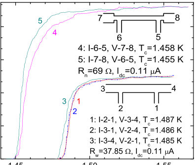
Figure 1: (Color online) Lines 1, 2 (dash-dotted), and 3 - resistive Rw(T) tran- sitions of the wide structure (bottom inset) at Idc = 0.11 µA. Lines 1, 2, and 3 correspond to the measurement circuits: (I-2-1, V-3-4), (I-3-1, V-2-4), and (I-3-4, V-2-1), respectively. Lines 4 and 5 are Rn(T) transitions of the narrow structure (inset at the top) at Idc = 0.11 µA. Lines 4 and 5 correspond to the measurement circuits: (I-6-5, V-7-8) and (I-7-8, V-6-5), respectively.
📷 Fig 2
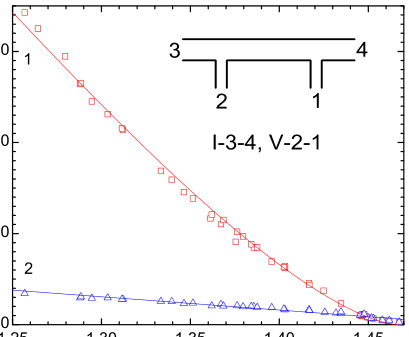
Figure 2: (Color online) Squares and triangles are critical switching and retrap- ping currents as functions of the temperature, respectively, recorded in the wide structure according to the measurement circuit: I-3-4, V-2-1. Lines 1 and 2 are adjustable theoretical functions for the switching current Ic1(T) and the retrap- ping current Iret2(T), respectively. Inset is the sketch of the structure.
📷 Fig 3
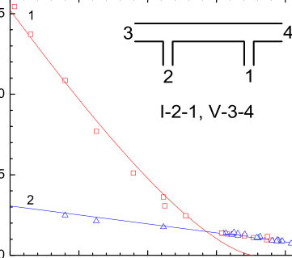
Figure 3: (Color online) Squares and triangles - switching and retrapping cur- rents as functions of the temperature, respectively, recorded in a wide structure according to the measurement circuit: I-2-1, V-3-4. Line 1 is the adjustable curve Ic1(T) for the experimental switching current in the range T = 1.25 −1.4 K. Line 2 is the adjustable curve Iret2(T) for the switching current in the in- terval T = 1.404 −1.475 K and for the retrapping current in the interval T = 1.25 −1.475 K. Inset is a sketch of the structure.
📷 Fig 4
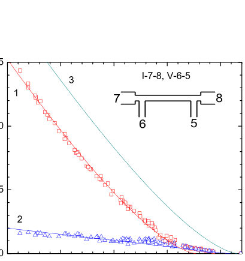
Figure 4: (Color online) Squares and triangles are the switching and retrap- ping currents as functions of the temperature, respectively, recorded in a nar- row structure according to the measurement circuit: I-7-8, V-6-5. Line 1 is the adjustable curve Ic1(T) for the experimental switching current in the range T = 1.25 −1.41 K. Line 2 is the adjustable curve Iret2(T) for the switching current at T = 1.415−1.444 K and for the retrapping current at T = 1.25−1.45 K. Line 3 is the expected switching current of a narrow structure if critical tem- peratures of narrow and wide wires making up a narrow and wide structure, are the same. Inset: a sketch of the structure.
Why it may be interesting. not directly relevant
Summary. This study reveals that narrower superconducting aluminum wires have lower critical temperatures and current densities than wider wires of the same thickness. The authors suggest this is caused by depairing centers on the wire boundaries and observe that the structures can behave as hybrid SNS junctions at certain temperatures.
Detailed structure
**Main problem.** Investigating why narrower quasi-one-dimensional aluminum structures exhibit lower critical temperatures and critical current densities compared to wider structures of the same thickness.
**Main result.** The researchers discovered that decreasing wire width leads to a decrease in Tc and jc, likely due to the increased influence of depairing centers on dirty longitudinal boundaries. They also identified two distinct temperature regimes for the switching current, including the formation of hybrid SNS junctions.
**Method.** Electrical measurements of voltage-current characteristics and resistance-temperature transitions were performed in zero magnetic field using various measurement circuits and low-noise analog equipment.
**Model / system.** Quasi-one-dimensional superconducting aluminum thin-film structures (thickness 19 nm) with varying widths (0.27 um and 0.48 um) fabricated on a silicon chip.
**Key observables.** Critical temperatures (Tc), critical switching currents (Isw), critical retrapping currents (Iret), and normal-state resistance (Rn).
**Important parameters / regimes.** Dirty limit regime (electron mean free path ~9-9.6 nm), Ginzburg-Landau coherence length (~0.11 um), and London penetration depth (16 nm).
**Assumptions / limitations.** The reduction in Tc is attributed to the depairing effect of magnetic atoms or vacancies on the longitudinal boundaries of the narrow wires.
**Figures summary.** Figure 1 shows resistance vs. temperature plots for different measurement circuits; Figure 2 displays V(I) curves and switching current temperature dependence for wide structures; Figures 3 and 4 show temperature dependence of switching current for narrow structures compared to theoretical predictions.
**Paper structure.** The paper introduces the problem of Tc discrepancy in asymmetric structures, describes the experimental setup and fabrication of Al wires, presents measurement results for Tc and critical currents, discusses the theoretical modeling using Kupriyanov-Lukichev and GL theories, and concludes with a proposed mechanism involving boundary depairing.
Abstract
We measured the critical temperatures and critical switching and retrapping currents of wide and narrow thin-film quasi-one-dimensional superconducting aluminum structures of the same thickness in zero magnetic field. For the first time, we found that the narrower the structure, the lower the critical temperature and critical current density in the structure. Probably, the influence of depairing centers that are on dirty longitudinal boundaries of the structure, is the stronger than the narrower the structure. It is found for the first time that, in most cases, the temperature-dependent switching critical current in both structures is approximated by two functions. At temperatures below the temperature corresponding to the bottom of the resistive N-S transition of structures, the switching critical current is described by the Kupriyanov-Lukichev theory. At temperatures close to the top of the N-S transition, the switching current is linear with temperature and coincides with the critical Josephson current. At these temperatures, Josephson SNS junctions are formed in structures.
↑ back to top
Authors: Maria Teresa Mercaldo, Mario Cuoco, Carmine Ortix
Type: theory · Category: other · PDF: https://arxiv.org/pdf/2604.27544v1
Analysis basis: abstract only; PDF text extraction failed or PDF unavailable
Why it may be interesting. not directly relevant
Summary. The paper demonstrates that the curvature of thin magnetic shells can be used to engineer nonlinear transport effects. By manipulating geometric bending, one can selectively probe both the quantum metric and the Berry curvature dipole, providing a platform for controlling the quantum geometry of Bloch states.
Detailed structure
**Main problem.** How can geometric curvature and strain gradients in thin magnetic shells be used to engineer and probe the components of the quantum geometric tensor?
**Main result.** Geometric bending breaks inversion symmetry and activates orbital Rashba coupling, generating a nonlinear anomalous Hall effect (NAHE) governed by the quantum metric and the Berry curvature dipole.
**Method.** Theoretical analysis of transport properties in curved ferromagnetic structures, focusing on the interplay between strain-induced symmetry breaking and spin-orbit coupling.
**Model / system.** Thin ferromagnetic shells subject to geometric bending, which induces strain gradients and breaks inversion and rotational symmetries.
**Key observables.** Nonlinear anomalous Hall effect (NAHE), quantum metric, Berry curvature dipole, and spin textures.
**Important parameters / regimes.** In-plane magnetization direction, applied electric field orientation, and degree of geometric deformation/curvature.
**Assumptions / limitations.** The system is treated within the framework of Bloch states and the quantum geometric tensor, assuming the presence of spin-orbit coupling and in-plane magnetization.
**Paper structure.** The paper introduces the problem of probing the quantum geometric tensor, describes the mechanism of curvature-induced symmetry breaking and orbital Rashba coupling, analyzes the resulting NAHE components, and concludes with the implications for engineering anisotropic transport.
Abstract
Optoelectronic and nonlinear transport experiments probe the quantum geometric tensor of Bloch states, whose real and imaginary components -- the quantum metric and the Berry curvature -- are typically constrained by symmetry. Here, we show that geometric bending provides a route to engineer such responses in centrosymmetric ferromagnets. Curvature-induced strain gradients across the shell thickness break inversion symmetry and activate an orbital Rashba coupling. In the presence of in-plane magnetization and spin-orbit coupling, this generates spin textures with a nontrivial quantum geometry, leading to an intrinsic nonlinear anomalous Hall effect (NAHE) governed by the quantum metric and maximized when the magnetization aligns with the applied electric field. When geometric deformations further break twofold rotational symmetry around the out-of-plane axis, an additional NAHE emerges, maximal for magnetization perpendicular to the driving electric field and governed by the Berry curvature dipole, thus giving access to the imaginary component of the quantum geometric tensor. These results establish curved ferromagnetic shells as a platform for engineering anisotropic nonlinear transport and for selectively probing both components of the quantum geometric tensor.
↑ back to top
Authors: Radmir Karamov, Tagir Karamov
Type: both · Category: disordered systems and neural networks · PDF: https://arxiv.org/pdf/2604.27775v1
Analysis basis: abstract only; PDF text extraction failed or PDF unavailable
Why it may be interesting. not directly relevant
Summary. This paper presents a machine learning approach to correct for measurement errors in shallow nanoindentation of steel. By using physics-guided features and data augmentation, a neural network can accurately predict reference hardness even when classical mechanical models fail. This workflow offers a way to perform efficient mechanical characterization of volume-constrained materials using small datasets.
Detailed structure
**Main problem.** Correcting the indentation size effect (ISE) in shallow nanoindentation of steels, where classical models like Nix-Gao fail due to the lack of a deep linear regime.
**Main result.** A constrained neural network achieved high predictive accuracy (RMSE = 0.470 GPa, MAPE = 5.4%) for reference hardness, outperforming linear models and providing stable estimates in the shallow regime.
**Method.** Physics-guided feature engineering and data augmentation (simulating noise and drift) applied to a small experimental dataset, using models including Ridge Regression, Random Forest, XGBoost, and Neural Networks.
**Model / system.** The study uses experimental nanoindentation data from three steel reference specimens with hardness ranging from 2-6.5 GPa, supplemented by augmented data representing instrumental noise and multiphase boundary blending.
**Key observables.** Hardness (H), contact-area errors, indentation work partitioning, H/Er ratio, and the area-invariant compliance proxy (Pmax/S^2).
**Important parameters / regimes.** Indentation depth (shallow regime), hardness range (2-6.5 GPa), and features related to energy-based and area-invariant descriptors.
**Assumptions / limitations.** The effectiveness of the machine learning model relies on the quality of the physics-guided augmentation and the representativeness of the engineered mechanical descriptors.
**Paper structure.** The paper introduces the problem of ISE in shallow indentation, describes the experimental dataset and augmentation strategy, details the feature engineering and ML model architectures, evaluates performance on a quarantined specimen, and uses SHAP/latent-space analysis to interpret model reliance on physical descriptors.
Abstract
Shallow nanoindentation enables mechanical characterization of thin films, individual phases and other volume-constrained materials, but measured hardness is often inflated by the indentation size effect (ISE), contact-area errors and tip-geometry artifacts. Classical ISE corrections such as the Nix-Gao require a deep linear regime and are unreliable when only shallow measurements are used. This study investigates how a small experimental dataset can be used to predict a reference hardness with physics-guided feature engineering and augmentation. Approximately 700 experimental indentations were collected from three steel reference specimens covering a hardness range of 2-6.5 GPa and augmented using physically motivated variations representing instrumental noise, session-level drift, and local multiphase boundary blending. The input space combined Oliver-Pharr values with mechanics descriptors, including indentation work partitioning, ($H\text{/}E_{r}$), and the area-invariant compliance proxy ($P_{\max}\text{/}S^{2}$). Ridge Regression (RR), Random Forest, XGBoost, and Neural Networks (NN) were evaluated using a quarantined fourth steel specimen tested at staggered loads. The hardness mapping was nonlinear: RR failed, whereas nonlinear models achieved ($R^2 > 0.98$) internally. A constrained (64-8-64) NN gave the best results, reaching RMSE = 0.470 GPa, MAPE = 5.4% on the quarantined steel. Unlike Nix-Gao analysis, the NN produced stable estimates in the shallow regime. SHAP and latent-space analysis showed reliance on area-invariant and energy-based descriptors. The results demonstrate the feasibility of a this workflow for ISE correction in steels using small datasets and suggest a pathway toward data-efficient characterization of any volume constrained materials.
↑ back to top
Authors: Felix Adams, Ichiro Takeuchi, Carlos Ríos Ocampo, Yifei Mo
Type: theory · Category: statistical mechanics · PDF: https://arxiv.org/pdf/2604.27120v1
Analysis basis: abstract only; PDF text extraction failed or PDF unavailable
Why it may be interesting. not directly relevant
Summary. The paper proposes a new thermodynamic screening method to discover new phase-change materials for memory and photonics. By using first-principles calculations to study the stability of polymorphs, the authors identify new ternary chalcogenide mixtures that could replicate the fast-switching properties of the industry-standard GST system.
Detailed structure
**Main problem.** The challenge of identifying new chalcogenide phase-change materials (PCMs) with a broad property space while maintaining fast switching speeds.
**Main result.** The development of a thermodynamic framework based on Ostwald's rule that identifies promising ternary chalcogenide mixtures by screening for GST-like polymorph-mediated crystallization pathways.
**Method.** First-principles calculations used to systematically evaluate the energetics of ternary chalcogenide mixtures along binary-binary tie lines and their polymorphs.
**Model / system.** Ternary chalcogenide mixtures, specifically focusing on the GeTe-Sb2Te3 (GST) system and related compositions.
**Key observables.** Phase stability, miscibility, and energetics of ground-state and metastable structures.
**Important parameters / regimes.** Phase-transition dynamics, crystallization pathways, and thermodynamic stability of polymorphs.
**Assumptions / limitations.** The framework is motivated by Ostwald's rule and assumes that thermodynamic polymorph screening can serve as a proxy for complex phase-transition dynamics.
**Paper structure.** The paper introduces the need for new PCMs, proposes a thermodynamic framework based on Ostwald's rule, describes the first-principles methodology for evaluating ternary mixtures, validates the approach against known GST behavior, and presents new candidate materials.
Abstract
Chalcogenide phase-change materials (PCMs) are important for nonvolatile memory and reconfigurable photonic technologies. The GeTe-Sb2Te3 mixture system, commonly referred to as GST, is the most well-known PCM family, but new PCMs are needed to broaden the accessible property space while retaining fast switching. Here, we propose a thermodynamic framework, motivated by Ostwald's rule, for understanding and identifying PCM materials. Since direct modeling of phase-transition dynamics is computationally expensive, Using first-principles calculations, we systematically evaluate the energetics of ternary chalcogenide mixtures along binary-binary tie lines and their polymorphs. By comparing ground-state and metastable structures, we assess phase stability, miscibility, and the likelihood of GST-like polymorph-mediated crystallization pathways across a broad composition space. The calculations reproduce known behavior in GST and related systems and identify several promising candidate mixtures with similar features. These results provide insight into why some PCM systems are more favorable than others and establish thermodynamic polymorph screening as a practical route for future PCM discovery.
↑ back to top
Authors: Akhil Reddy Peeketi, Blas P Uberuaga, Travis E Jones
Type: theory · Category: disordered systems and neural networks · PDF: https://arxiv.org/pdf/2604.27910v1
Analysis basis: full PDF text, analyzed in chunks
📷 Fig 1
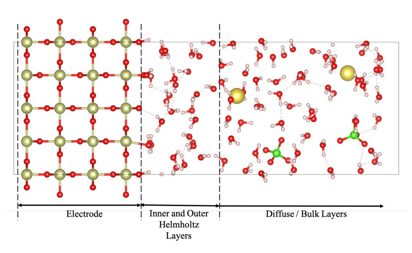
Figure 1: Snapshot of an IrO2(110)/aqueous NaClO4 interface, our prototype training system for Soft-FQEq. The interface partitions into three structurally distinct regions (electrode, inner and outer Helmholtz layers, and diffuse/bulk electrolyte) and, at molecular resolution, into fragments for per-fragment charge equilibration: the connected electrode slab (one fragment), each intact water molecule, and each individual Na+ or ClO4 – ion. The electrode (Ir, olive; O, red) is a conductor whose electronic states set the surface’s electrochemical potential. The inner and outer Helmholtz layers comprise the first few Å of solvent: oriented water molecules and, further out, the plane of closest...
📷 Fig 2
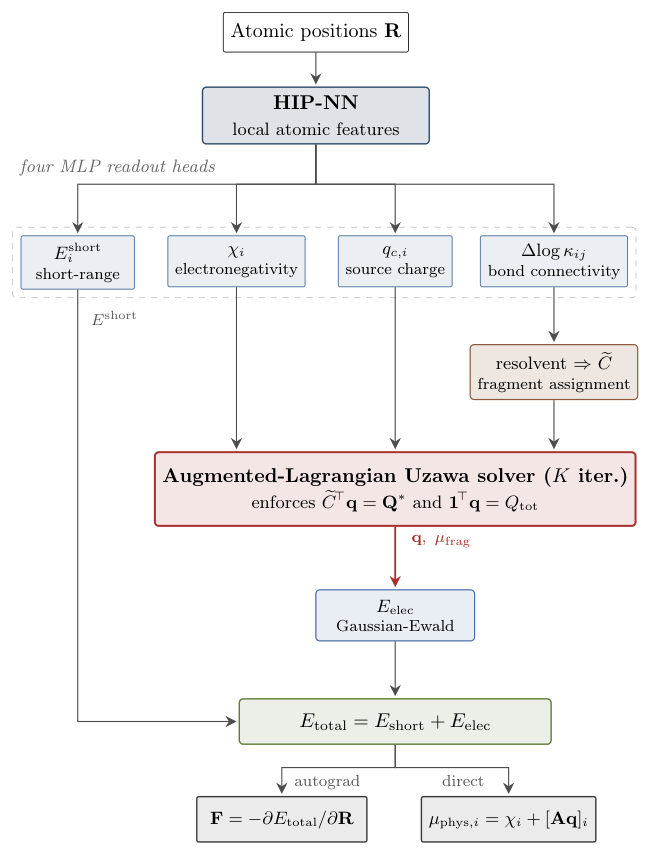
Figure 2: Architecture of fragment-constrained charge equilibration on a HIP-NN feature net- work. Atomic positions R feed a shared feature network whose four MLP readout heads produce Eshort i , χi, qc,i, and ∆log κij. The bond-connectivity head feeds a differentiable resolvent (Sec- tion 2.2) producing the soft fragment-membership matrix eC; the augmented-Lagrangian Uzawa solver (Section 2.1) then consumes χ, qc, and eC and returns equilibrated charges q and frag- ment chemical potentials µfrag. Forces are obtained by autograd through the unrolled solver; the per-atom observable µphys,i = χi + [Aq]i (Section 2.5) is evaluated directly from the converged χ and q.
📷 Fig 3
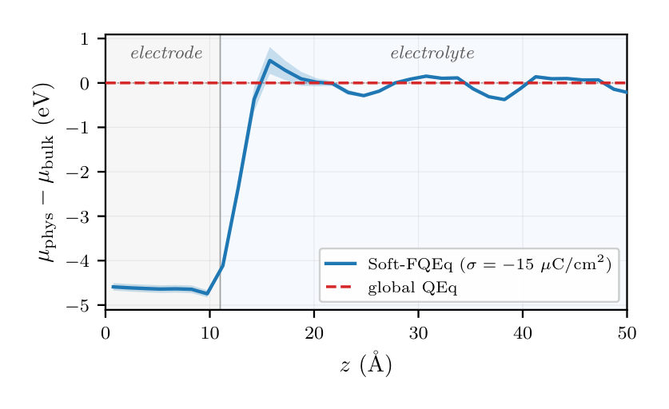
Figure 3: Per-atom µphys,i = χi + [Aq]i along the interface normal z for a charge-neutral IrO2/H2O/NaClO4 slab, referenced to the bulk-water mean (z ∈[30, 60] Å). The two shaded regions separate the electrode (gray, z ≲11.5 Å) from the electrolyte (light blue, z ≳11.5 Å). Soft-FQEq (blue) shows a flat electrode plateau, a sharp interfacial drop, and a bulk-water plateau near zero; shaded band is the 5-seed ensemble standard deviation. Replacing the Uzawa solver by a global-QEq bordered solve at inference with the same trained weights collapses µphys to a single system-wide value (red dashed line). Species shown: Ir and electrode-O in the electrode region; clean water-O (not bonded to Cl) in...
📷 Fig 4
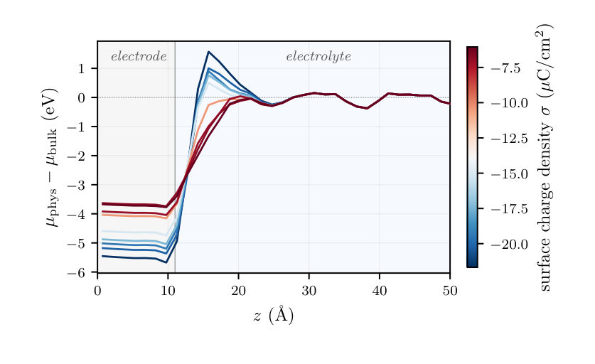
Figure 4: Response of µphys(z) to electrode charging. Nine ion compositions from 4 Na+ to 4 ClO4 – per electrode face (placed in the Stern layer) span a range of model-predicted surface charge densities σ, with each composition averaged over 5 random seeds. Shaded regions and species inclusion match Figure 3: electrode (gray, z ≲11.5 Å) and electrolyte (light blue, z ≳ 11.5 Å). The electrode plateau shifts monotonically with σ: more positive σ raises µphys on the electrode, consistent with the capacitive response expected at an interface. The bulk-water region remains near zero on each configuration’s own bulk-water reference. Single-snapshot evaluation per seed, not MD-averaged; curves are...
Why it may be interesting. not directly relevant
Summary. This paper introduces a new machine learning solver layer that allows interatomic potentials to model electrochemical interfaces by allowing different chemical potentials for different molecular fragments. This overcomes the structural limitation of previous models that forced a single, uniform potential across the entire system, enabling the simulation of electric double layers.
Detailed structure
**Main problem.** Standard charge-aware machine learning interatomic potentials (MLIPs) using global charge equilibration cannot capture the electrochemical potential gradient required for an electric double layer at interfaces.
**Main result.** The authors developed Soft-FQEq, a differentiable, fragment-constrained charge equilibration layer that successfully recovers the interfacial potential gradient and reproduces DDEC6 charges.
**Method.** A differentiable solver layer using an augmented-Lagrangian Uzawa iteration and a graph Laplacian resolvent to enforce per-fragment charge conservation within a HIP-NN architecture.
**Model / system.** An electrochemical interface consisting of an IrO2 electrode and an aqueous electrolyte (H2O/Na+/ClO4-). The model uses a machine learning interatomic potential (MLIP) with a Hamiltonian decomposed into short-range and fragment-constrained electrostatic energy.
**Key observables.** Local electrochemical potential (mu_phys), per-atom charges, per-fragment chemical potentials, and the Galvani potential difference.
**Important parameters / regimes.** Penalty strength beta, Ewald splitting parameter, and the soft bond connectivity matrix.
**Assumptions / limitations.** The method assumes Gaussian charge widths for stability and is currently limited to systems of a few hundred atoms due to the O(N^3) complexity of the resolvent.
**Figures summary.** Figure 1 shows a snapshot of the IrO2/aqueous interface with partitioned fragments; Figure 2 illustrates the Soft-FQEq architecture; Figure 3 displays the reconstructed electrochemical potential profile along the z-axis.
**Paper structure.** The paper introduces the problem of global QEq failure, presents the Soft-FQEq mathematical formulation and differentiable fragment identification, details the implementation within the hippynn framework, and validates the model via ablation studies and comparison to DFT-derived charges and potentials.
Abstract
Predictive simulation of electrochemical interfaces requires atomistic models that capture reactive bond rearrangements, long-range electrostatics, and charge distributions reflecting the electronic distinctness of electrode and electrolyte. Existing charge-aware machine-learned interatomic potentials (MLIPs) built on global charge equilibration (QEq) settle electrode and electrolyte at a common electrochemical potential, leaving no room for the interfacial gradient that the double layer requires and admitting spurious charge transfer between electronically disconnected regions. Per-fragment charge equilibration is the established remedy in classical molecular dynamics, but reliance on predefined molecular topology has confined it to non-reactive systems. We lift this restriction by making fragment identification itself a differentiable function of atomic geometry, yielding soft fragment-constrained charge equilibration (Soft-FQEq) -- a solver layer that restores fragment-resolved charge conservation in reactive MLIPs. The layer consumes four scalar MLP readouts from a shared atomic-feature network -- per-atom electronegativity, source charge, short-range energy, and a soft bond connectivity -- and returns equilibrated charges together with per-fragment chemical potentials. We implement Soft-FQEq as an extension of the hippynn framework on a HIP-NN feature network and train it on DFT energies, forces, and DDEC6 charges for IrO2/H2O/Na+/ClO4- interfaces. The trained model recovers a clear electrode-to-electrolyte gradient in the per-atom electrochemical potential. With the same trained weights but the fragment-constrained solver replaced by global QEq at inference, this gradient collapses to an essentially uniform profile, directly showing that the gradient cannot be sustained within global QEq while the fragment formulation recovers it.
↑ back to top
Authors: R. Mathew Roy, M. Povolotskiy, J. Kirschke, C. Prange, Y. Xia, V. Sundaramurthy, P. Puphal, M. Pinteric, M. van de Loo, A. Kreyssig, T. Zhang, A. E. Böhmer, M. Dressel, M. Wenzel
Type: both · Category: strongly correlated electrons · PDF: https://arxiv.org/pdf/2604.28105v1
Analysis basis: abstract only; PDF text extraction failed or PDF unavailable
Why it may be interesting. not directly relevant
Summary. This paper demonstrates that doping the semiconductor FeSb2 with cobalt induces a metallic altermagnetic state stable at room temperature. By using optical spectroscopy and DFT, the authors identify unique electronic transitions and enhanced electron-phonon coupling characteristic of this new state. This establishes Co-doped FeSb2 as a key platform for studying $d$-wave altermagnetism.
Detailed structure
**Main problem.** The search for bulk metallic altermagnetism and the characterization of the electronic and lattice properties in Co-doped FeSb2.
**Main result.** Cobalt substitution (~15%) transforms the narrow-gap semiconductor FeSb2 into a metallic altermagnetic state that persists up to room temperature, characterized by specific low-energy interband transitions and enhanced electron-phonon coupling.
**Method.** The study combines infrared optical conductivity measurements with density functional theory (DFT) calculations to analyze electronic transitions and phonon dynamics.
**Model / system.** The physical system is Co-doped FeSb2, a correlated narrow-gap semiconductor that transitions into a metallic altermagnetic state via carrier tuning.
**Key observables.** Infrared optical conductivity, low-energy interband transitions (near 0.1 eV), spin-split bands, Fano lineshapes in phonons, and mode mixing.
**Important parameters / regimes.** Cobalt substitution level (~15%), spin-split band energy (~0.2 meV), spin-orbit coupling induced splitting (~5 meV), and temperature (up to room temperature).
**Paper structure.** The paper presents experimental evidence of the metallic altermagnetic state via optical spectroscopy, followed by DFT calculations to attribute observed transitions to altermagnetic spin ordering and spin-orbit coupling, and concludes with an analysis of phonon-driven effects.
Abstract
The realization of bulk metallic altermagnetism has remained elusive despite the growing number of candidate materials. Here, we present evidence that moderate cobalt substitution ($\sim$15%) drives the correlated narrow-gap semiconductor FeSb$_2$ into a metallic altermagnetic state persisting up to room temperature. The infrared optical conductivity reveals low-energy interband transitions near 0.1 eV that emerge upon doping and grow with Co concentration. Density functional theory calculations show that these transitions originate exclusively from altermagnetic spin ordering, with spin split bands ($\sim$0.2 meV) of non-relativistic origin, together with spin-orbit coupling induced band splitting of the order of $\sim$5 meV near the Fermi level. Co substitution further leads to Fano lineshapes and mode mixing in the infrared-active phonons, reflecting enhanced electron-phonon coupling and local inversion symmetry breaking, while leaving the altermagnetic spin symmetry intact. Our results establish carrier-tuned FeSb$_2$ as a platform for exploring metallic $d$-wave altermagnetism and its coupling to lattice degrees of freedom.
↑ back to top
Authors: Alexander C. Tyner, Avinash Pathapati, Alexander V. Balatsky
Type: theory · Category: disordered systems and neural networks · PDF: https://arxiv.org/pdf/2604.27879v1
Analysis basis: abstract only; PDF text extraction failed or PDF unavailable
Why it may be interesting. not directly relevant
Summary. This paper addresses the difficulty of simulating large-scale organic materials like MOFs by fine-tuning a machine-learning interatomic potential (CHGNet) with a new dataset of 15,000+ computations. The authors use this improved model to implement a workflow that discovers new, highly magnetic metal-organic frameworks. This work is significant for accelerating the discovery of functional materials that could replace rare-earth elements.
Detailed structure
**Main problem.** Simulating metal-organic frameworks (MOFs) is computationally challenging due to large unit cells and the underrepresentation of organic materials in existing machine-learning training sets.
**Main result.** The authors successfully fine-tuned the CHGNet interatomic potential using a new dataset of 15,000+ first-principles computations from the OMDB and implemented a workflow to identify novel magnetic MOFs.
**Method.** Fine-tuning the CHGNet machine-learned interatomic potential using a dataset derived from the Organic Materials Database (OMDB) and applying a site substitution workflow on QMOF structural prototypes.
**Model / system.** Metal-organic frameworks (MOFs) characterized by large unit cells containing both organic and inorganic components, specifically targeting the generation of highly magnetic structures.
**Key observables.** Magnetic properties of the identified MOFs
**Assumptions / limitations.** The effectiveness of fine-tuning CHGNet relies on the representativeness of the 15,000 single-point first-principles computations from the OMDB.
**Paper structure.** The paper introduces the computational challenge of MOF simulation, describes the creation of a new training dataset from OMDB, details the fine-tuning of the CHGNet model, and presents a workflow for identifying new magnetic MOFs.
Abstract
The potential to utilize metal-organic frameworks as a replacement for rare earth materials as well as in technological applications has prompted increased interested in this material class. The simulation of organic materials, including metal-organic frameworks (MOFs), represents a computational challenge due to an increased average number of atoms in the unit cell. Compounding this challenge, modern materials databases are generally limited to inorganic structures due to their utility in modern technologies such as batteries and integrated circuits. Machine-learning tools appear ideally suited to study these systems. However, organic materials are generally underrepresented in the training sets of foundational models. In this work we leverage the the Organic Materials Database (OMDB) to create a training dataset comprised of more than 15,000 single-point first-principles computations for finetuning machine learned interatomic potentials. Specifically, we fine tune CHGNet and implement a site substitution workflow to identify novel, highly magnetic, MOFs from structural prototypes within the QMOF database.
↑ back to top
Authors: Neelanjan Chakraborti, Sudeep Kumar Ghosh, Snehasish Nandy
Type: theory · Category: other · PDF: https://arxiv.org/pdf/2604.28088v1
Analysis basis: full PDF text, analyzed in chunks
📷 Fig 1
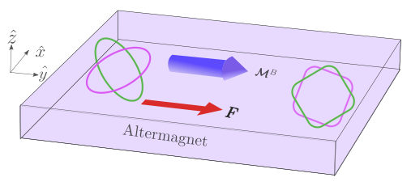
FIG. 1. Magnetic-field-induced spin magnetization in an altermagnet: In the absence of external perturbations (F), an altermagnet exhibits vanishing net spin magnetization despite a spin-split band structure. A finite linear spin mag- netization (MB) is induced under an applied magnetic field (B), whereas the linear response to an electric field (E) is forbidden in a centrosymmetric altermagnet. The magnetic- field-driven response originates from the spin-rotation quan- tum metric.
📷 Fig 2
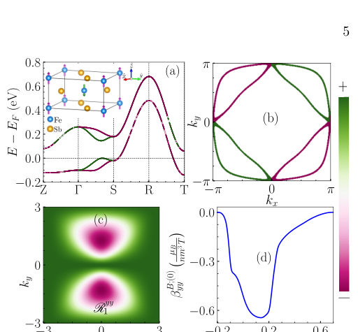
FIG. 2. Spin magnetization in the d-wave altermagnet FeSb2: (a) Spin-projected band structure along the high- symmetry path Z–Γ–S–R–T, showing pronounced nonrela- tivistic spin splitting along the Γ–S and Z–R directions. The crystal structure is shown in the inset. (b) Spin-projected Fermi surface in the kx–ky plane at µ = 0.16 eV, highlighting the characteristic d-wave anisotropy of the spin-split bands. (c) yy-component of the spin-rotation quantum metric in the Brillouin zone, revealing the underlying geometric structure. (d) yy-component of the magnetic-field-induced linear spin magnetization response tensor as a function of chemical po- tential.
📷 Fig 3
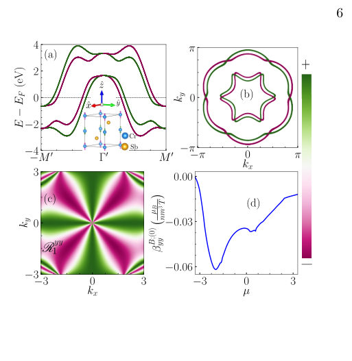
FIG. 3. Spin magnetization in the g-wave altermagnet CrSb: (A) Spin-projected band structure along the high- symmetry path −M ′–Γ–M ′, showing pronounced nonrela- tivistic spin splitting along the given directions. The crystal structure is shown in the inset. (B) Spin-projected Fermi sur- face in the kx–ky plane at µ = 0.16 eV, highlighting the char- acteristic d-wave anisotropy of the spin-split bands. (c) Distri- bution of yy component of the spin-rotation quantum metric across the Brillouin zone, revealing the underlying quantum- geometric mechanism responsible for the response in panel (d). (d) Chemical-potential dependence of the yy component of the linear spin magnetization response...
Why it may be interesting. not directly relevant
Summary. This paper identifies a new, universal quantum-geometric mechanism for generating massive spin magnetization in centrosymmetric altermagnets. It shows that the spin-rotation quantum metric drives a magnetic-field-induced response that is orders of magnitude larger than conventional magnetic signals, offering a promising platform for spintronics.
Detailed structure
**Main problem.** Identifying the quantum-geometric mechanism responsible for linear spin magnetization in centrosymmetric altermagnets, where inversion and $C_n T$ symmetries suppress conventional responses.
**Main result.** The authors discover that magnetic-field-induced spin magnetization in centrosymmetric altermagnets originates entirely from the spin-rotation quantum metric and can reach a giant magnitude of $10^{-2} \mu_B ext{ nm}^{-3}$ at very low fields.
**Method.** A unified theoretical framework using a generalized quantum geometric tensor that incorporates both momentum translations and spin rotations of Bloch states, combined with symmetry analysis and linear response theory.
**Model / system.** Centrosymmetric altermagnets, specifically $d$-wave $ ext{FeSb}_2$ and $g$-wave $ ext{CrSb}$, modeled using a tight-binding Hamiltonian featuring spin-split band structures and Néel exchange fields.
**Key observables.** Linear spin magnetization induced by an external magnetic field, spin-rotation quantum metric, and spin-rotation Berry curvature.
**Important parameters / regimes.** Magnetic field strength ($\sim 10 ext{ mT}$), spin-rotation quantum metric ($R_{ab}$), and the predicted magnetization scale of $10^{-2} \mu_B ext{ nm}^{-3}$.
**Assumptions / limitations.** Weak-disorder limit using the relaxation-time approximation; focus on the linear response regime.
**Figures summary.** Figure 1 illustrates the concept of magnetic-field-induced magnetization in altermagnets, showing the vanishing net magnetization at zero field and the prohibition of electric-field-driven response in centrosymmetric systems.
**Paper structure.** The paper introduces the problem of spin magnetization in altermagnets, develops a generalized quantum geometric tensor framework, applies symmetry constraints to decompose magnetization contributions, and demonstrates the effect using specific material models ($ ext{FeSb}_2$ and $ ext{CrSb}$).
Abstract
Altermagnets host spin-split band structures while exhibiting vanishing equilibrium spin magnetization, making field-induced responses a direct probe of their quantum geometry. A central question, in this regard, is which quantum-geometric mechanism can generate a linear spin magnetization in centrosymmetric systems. Here we develop a unified framework based on a generalized quantum geometric tensor that incorporates both momentum translations and spin rotations of Bloch states, and decompose spin magnetization into equilibrium, electric-field-driven, and magnetic-field-driven contributions. We show that inversion symmetry forbids the linear electric-field response in centrosymmetric systems, while $C_n T$ symmetry further suppresses the equilibrium contribution in altermagnets. Consequently, centrosymmetric altermagnets provide a particularly clean realization in which the magnetic-field-induced spin magnetization emerges as the only symmetry-allowed linear quantum-geometric response. We demonstrate that this contribution originates entirely from the spin-rotation quantum metric, establishing it as the sole linear quantum-geometric mechanism in such systems. Using representative centrosymmetric altermagnets, including the $d$-wave compound $\mathrm{FeSb}_2$ and the $g$-wave compound $\mathrm{CrSb}$, we show that the spin-rotation quantum metric directly controls this response. Crucially, we predict a giant linear spin magnetization of order $10^{-2}μ_B\,\mathrm{nm}^{-3}$ at magnetic fields of $\sim 10\,\mathrm{mT}$, exceeding typical experimental values for conventional magnets by several orders of magnitude. Our results identify a universal quantum geometric mechanism of spin magnetization operative in centrosymmetric systems in general, and establish centrosymmetric altermagnets as an ideal platform for its experimental detection with potential applications in spintronics.
↑ back to top
Authors: Samuel Croquette, Pierre Chantelot, Daniel A. Kiefer, Claire Prada, Fabrice Lemoult
Type: both · Category: other · PDF: https://arxiv.org/pdf/2604.27722v1
Analysis basis: abstract only; PDF text extraction failed or PDF unavailable
Why it may be interesting. not directly relevant
Summary. This paper presents a new method for characterizing soft elastomers using guided elastic waves instead of traditional rheometry. By analyzing wave dispersion under tension, the researchers can extract viscoelastic and hyperelastic properties across a wide frequency range. This approach offers a simpler, broadband alternative for studying the mechanics of soft materials.
Detailed structure
**Main problem.** Developing an alternative to conventional rheometry for characterizing the mechanical, viscoelastic, and acoustoelastic properties of soft elastomers.
**Main result.** A wave-based characterization method using guided elastic waves was successfully implemented, providing mechanical parameters consistent with plate-plate rheometry but over a much broader frequency range.
**Method.** The method uses stroboscopic measurements of monochromatic wave fields in a thin elastomer strip acting as a waveguide, combined with a numerical implementation to match experimental dispersion curves to a theoretical framework.
**Model / system.** The system consists of thin strips of commercial silicone elastomers acting as waveguides for in-plane guided elastic modes under controlled static elongation.
**Key observables.** Complex-valued dispersion relations for guided modes.
**Important parameters / regimes.** Frequency-dependent viscoelasticity and elongation-dependent acoustoelasticity (hyperelastic parameters).
**Assumptions / limitations.** The method assumes that the dispersion curves can be quantitatively matched to a theoretical framework coupling viscoelasticity and acoustoelasticity.
**Paper structure.** The paper introduces a wave-based characterization method, describes the theoretical framework coupling viscoelasticity and acoustoelasticity, details the numerical implementation for matching dispersion curves, and validates the approach using commercial silicone elastomers compared to conventional rheometry.
Abstract
Elastic wave propagation is intrinsically sensitive to the mechanical properties of the medium through which it travels. In soft elastomers, this makes guided elastic waves natural probes of viscoelastic and acoustoelastic behavior over a broad frequency range. In this work, we introduce a wave-based mechanical characterization method in which a thin elastomer strip acts as a waveguide supporting multiple in-plane guided modes. By combining stroboscopic measurements of monochromatic wave fields with a theoretical framework that couples frequency-dependent viscoelasticity and elongation-dependent acoustoelasticity, we extract complex-valued dispersion relations for guided modes under controlled static elongation. A dedicated numerical implementation allows these experimental dispersion curves to be quantitatively matched to theory, enabling identification of the material's rheological and hyperelastic parameters. Applied to several commercial silicone elastomers, the method yields mechanical parameters that are consistent with conventional plate-plate rheometry, while extending the accessible frequency range beyond that of conventional techniques. By exploiting the richness of guided-wave dispersion and the sensitivity of waves to both frequency and pre-stress, this approach provides a unified, broadband, and experimentally simple route to the mechanical characterization of soft elastomers.
↑ back to top
Authors: Rishi G. Gopalakrishnan, Srimayi Korrapati, Sumanta Tewari
Type: theory · Category: strongly correlated electrons · PDF: https://arxiv.org/pdf/2604.28184v1
Analysis basis: full PDF text, analyzed in chunks
📷 Fig 1
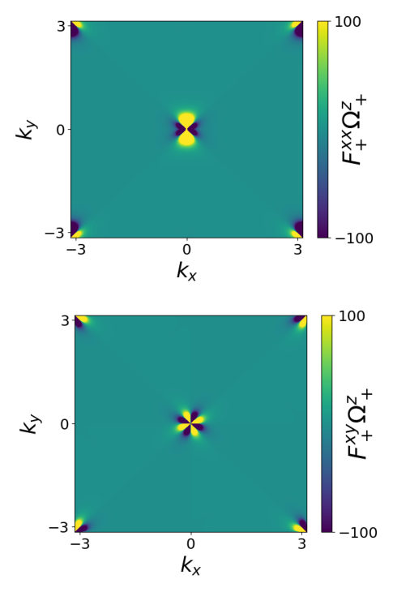
Figure 1. Variation of the factors F xx + Ωz + (top panel), F xy + Ωz + (bottom panel) in Eq. (16) over the kx −ky plane. We note that F xx T,=Ωz is even in kx and ky which makes the BZ in- tegral of this quantity finite, resulting in ηabcc ̸= 0. On the other hand, F xy T,+Ωz + is odd in both kx and ky and accord- ingly integrates to zero, resulting in vanishing ηabxy and ηabyx. These factors are concentrated around the the band crossings at Γ ≡(0, 0) and M ≡(π, π) points where they diverge as expected from the energy difference in the denominators (see Eqs. (19-21). The parameters used here are t = 1eV , λ = 0.3t, and ∆d = 0.5t.
📷 Fig 2
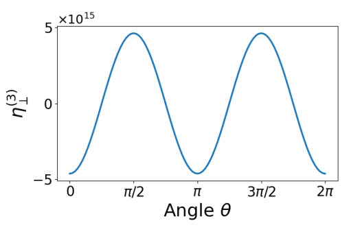
Figure 2. Variation of the third order thermal Hall conduc- tivity η(3) ⊥ in Eq.(28) over different values of the polar angle θ of the applied thermal gradient in the crystal frame. The conductivity η(3) ⊥ shows a cos 2θ dependence and vanishes at angle values equal to odd multiples of π/4. We use the model parameter values t = 1eV , λ = 0.3t, ∆d = 0.5t, chemical po- tential µ = −3.998eV , and T = 10K.
📷 Fig 3
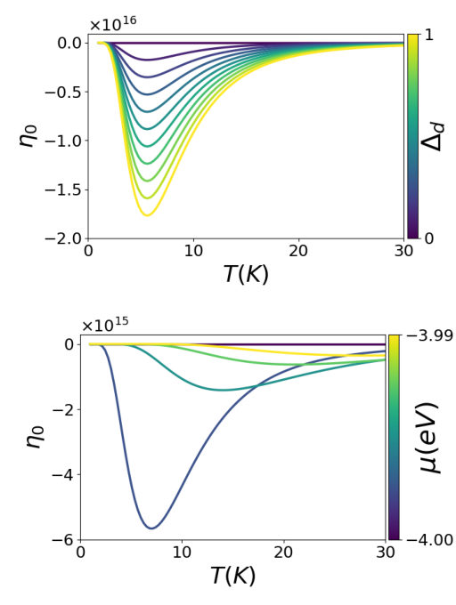
Figure 3. Variation of the third order thermal Hall conductiv- ity η0 as a function of the temperature T. Top: Displays the variation of the thermal Hall conductivity for various values of the d-wave order parameter ∆d with µ = −3.998eV . As we increase the order parameter, the thermal response becomes stronger. Bottom: Displays the variation of the thermal Hall conductivity for various values of the chemical potential µ with ∆d = 0.5t. As the chemical potential moves further from the band crossing point, the magnitude of the peak value of η0 decreases and the peak also moves to higher temperatures, while keeping the ratio (µ −2t)/(kBT) constant. The param- eters used here are t = 1eV , and...
📷 Fig 4
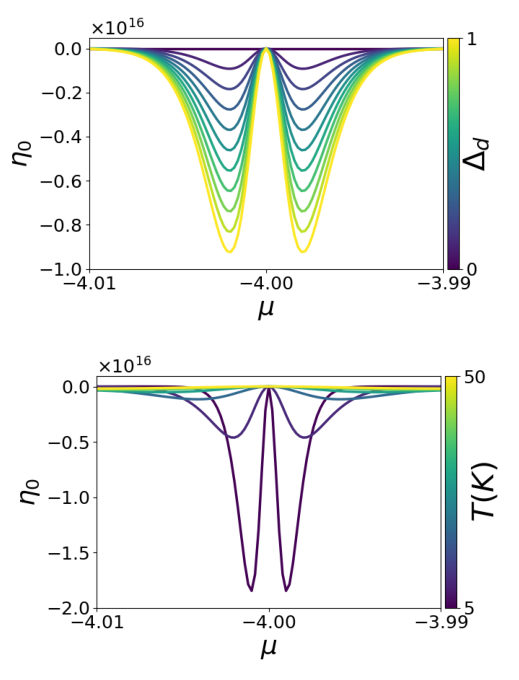
Figure 4. Variation of the third order thermal Hall conduc- tivity η0 as a function of the chemical potential µ. Top: Variation of the thermal Hall conductivity with respect to µ for various values of the d-wave order parameter ∆d with T = 10K. As we increase the order parameter, the thermal response becomes stronger. Bottom: Variation of the thermal Hall conductivity for various values of the chemical potential µ with ∆d = 0.5t. As the temperature increases, the posi- tion of the peak of η0 shifts further from the band crossing point (µ = −4.0eV ) and the magnitude of the value of the peak decreases. In both cases, the thermal Hall conductiv- ity vanishes at the band crossing chemical...
Why it may be interesting. not directly relevant
Summary. This paper identifies that in d-wave altermagnets, the first nonvanishing intrinsic anomalous thermal Hall effect appears at the third order of the temperature gradient. This effect is driven by quantum geometric properties, specifically the nonlinear thermal Berry connection polarizability. The study provides clear experimental signatures through specific angular and temperature-dependent patterns.
Detailed structure
**Main problem.** The study investigates the intrinsic nonlinear anomalous thermal Hall effect (NATHE) in d-wave altermagnets, specifically identifying the leading-order nonvanishing contribution to the transverse heat current.
**Main result.** The researchers show that the leading intrinsic response occurs at the third order of the temperature gradient and is driven by a new quantity called the nonlinear thermal Berry connection polarizability (NTBCP).
**Method.** The authors use Schrieffer-Wolff perturbation theory to calculate corrections to energy and Berry curvature and develop a new formalism for the NTBCP tensor.
**Model / system.** The system is a two-dimensional d-wave altermagnet described by a two-band Hamiltonian featuring specific spin-group symmetries (C4zT and C2z) and a d-wave order parameter.
**Key observables.** Third-order intrinsic anomalous thermal Hall conductivity, transverse thermal current, and the nonlinear thermal Berry connection polarizability (NTBCP) tensor.
**Important parameters / regimes.** Temperature (T), chemical potential (mu), altermagnet parameter (delta_d), and the temperature gradient (nabla T).
**Assumptions / limitations.** The analysis is primarily based on a two-band model approximation and a perturbation expansion of the driving fields.
**Figures summary.** Figure 1 shows the momentum-space distribution of the NTBCP kernel; Figure 2 illustrates the cos(2theta) angular dependence of the thermal conductivity; Figure 3 shows the temperature dependence of the conductivity for various delta_d and mu; Figure 4 shows the chemical potential dependence.
**Paper structure.** The paper introduces the problem of nonlinear thermal transport in altermagnets, develops a perturbative framework using Schriefer-Wolff transformation, introduces the NTBCP tensor, and then analyzes the resulting angular, temperature, and chemical potential dependencies.
Abstract
We investigate the intrinsic anomalous thermal Hall effect in d-wave altermagnets, where a transverse heat current is generated by a longitudinal temperature gradient in the absence of a magnetic field, with the leading response proportional to $(\nabla T)^3$. In these systems, the intrinsic Berry curvature-driven linear and thermal quantum-metric-driven second-order anomalous thermal Hall currents vanish as a consequence of crystalline symmetry. We show that the first nonvanishing contribution arises at third order in the temperature gradient and is governed by a nonlinear thermal Berry-connection polarizability, a quantity introduced in this work. Our analysis reveals a distinctive angular dependence of the anomalous thermal Hall conductance as the applied thermal gradient is rotated with respect to the crystal axes. We also find characteristic temperature and chemical-potential dependences that can be tested experimentally. These results identify unique quantum geometry-induced thermal responses and establish altermagnets as a promising platform for exploring intrinsic (i.e., scattering-time-independent) geometric transport phenomena.
↑ back to top
Authors: Dilek Yildiz, Sungmin Kim, Dengyu Yang, Muqing Yu, Kyoungjun Lee, Ruiqi Sun, En-Min Shih, Steven R. Blankenship, Patrick Irvin, Franz J. Giessibl, Chang-Beom Eom, Jeremy Levy, Joseph A. Stroscio
Type: experiment · Category: strongly correlated electrons · PDF: https://arxiv.org/pdf/2604.28077v1
Analysis basis: full PDF text, analyzed in chunks
📷 Fig 1
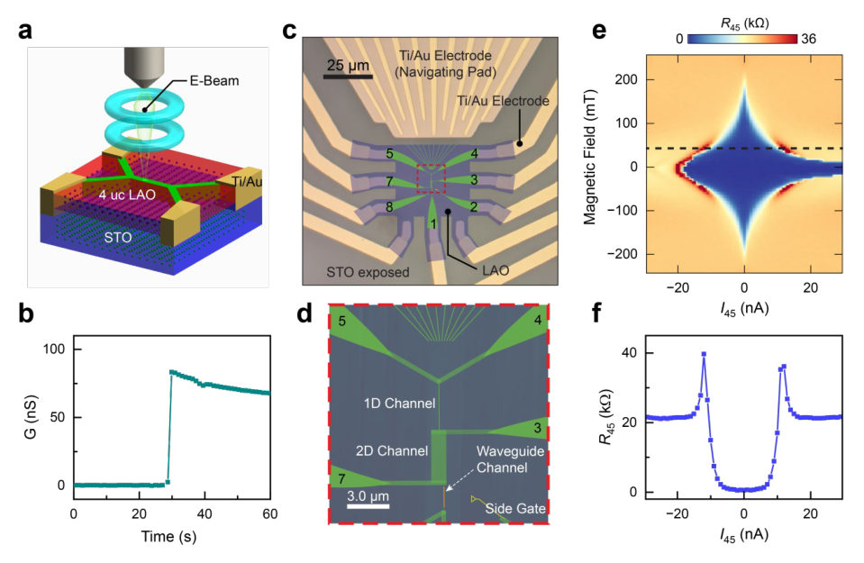
Fig. 1. Patterning the LAO/STO interface with superconducting channels. (a) Schematic diagram of ULV-EBL patterning. (b) Conductance measurement evolution during patterning. A sharp conductance increase is observed when the pattern connects two contacts. (c) Optical microscope image of the device. The top LAO layer has been etched away outside the dark blue region. The lithographically-defined area patterned by ULV-EBL is indicated in green. (d) The region enclosed by the dashed red box in (c) is magnified to show the various patterns. The dimensions of the patterned areas are: 1D channel (l × w): 3.5 µm × 10-20 nm (single line), 2D channel (l × w): 3.5 µm × 1 µm, and the waveguide: 1.35 µm...
📷 Fig 2
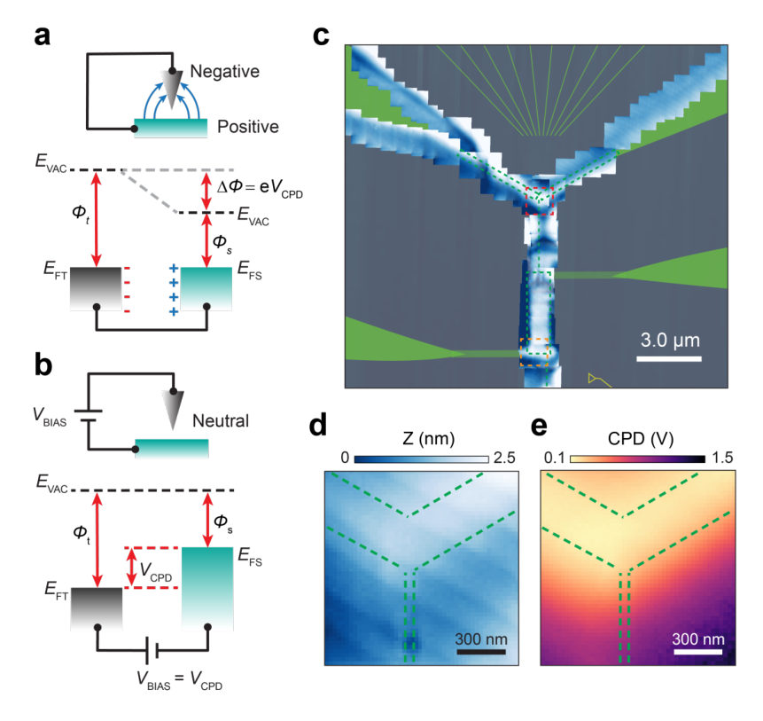
Fig. 2. Visualizing the patterned channel. Schematic diagrams illustrating the concept of contact potential difference (CPD). (a) When the tip and the sample are electrically in contact, a potential difference across the vacuum gap arises due to the difference in their work functions. (b) A bias voltage 𝑉Bias is applied to the sample to nullify this difference, making the tip and the sample electrostatically neutral and 𝑉Bias is equivalent to the contact potential difference. (c) AFM topography along the patterned region of the four uc LAO/STO interface, acquired in frequency modulation (FM) mode with an oscillation amplitude of 3.2 nm –5.0 nm. (d) AFM topography and (e) contact potential...
📷 Fig 3
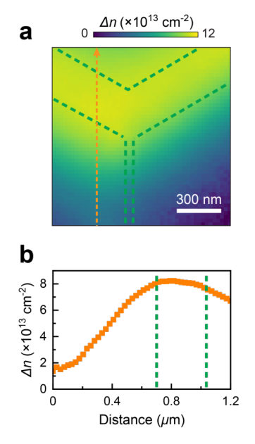
Fig. 3. Estimation of spatial carrier density profile in a superconducting channel. (a) Carrier density map of the patterned LAO/STO region calculated from the CPD map in Fig. 2e using equation (1). A CPD of 1.024 V was used for the non-patterned area obtained at the bottom left corner of the image in Fig. 2e. (b) Charge density profile across the pattern boundary extracted along the orange dotted line in (a). The statistical uncertainty is less than the symbol size. The estimated pattern boundaries are indicated by green dashed lines.
📷 Fig 4
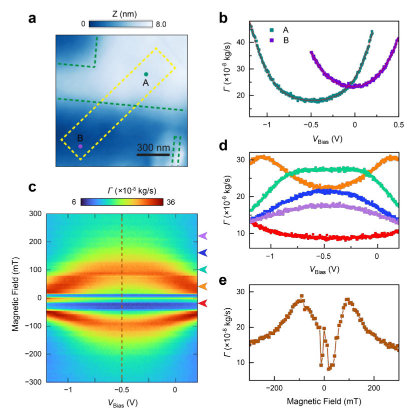
Fig. 4. AFM energy dissipation measurement at LAO/STO interface. (a) AFM Topography image at the end of the 2D channel region of the 4 uc LAO/STO device (see orange box in Fig. 2c). The green dashed lines indicate the estimated patterned boundary. (b) Damping coefficient vs. sample bias curves obtained at the two points marked in (a). The two curves are fit to the form 𝛼∆𝑉2 + 𝛽∆𝑉4 . The ratios of the 4th to 2nd order coefficients, 𝛽/𝛼= (3.85 ± 0.03) 𝑉−2 and (1.84 ± 0.01) 𝑉−2 for curves A and B, respectively. The uncertainty estimates represent one standard deviation derived from the non-linear least squares fits. The measurements in the patterned area have the larger 4th-order components....
📷 Fig 5
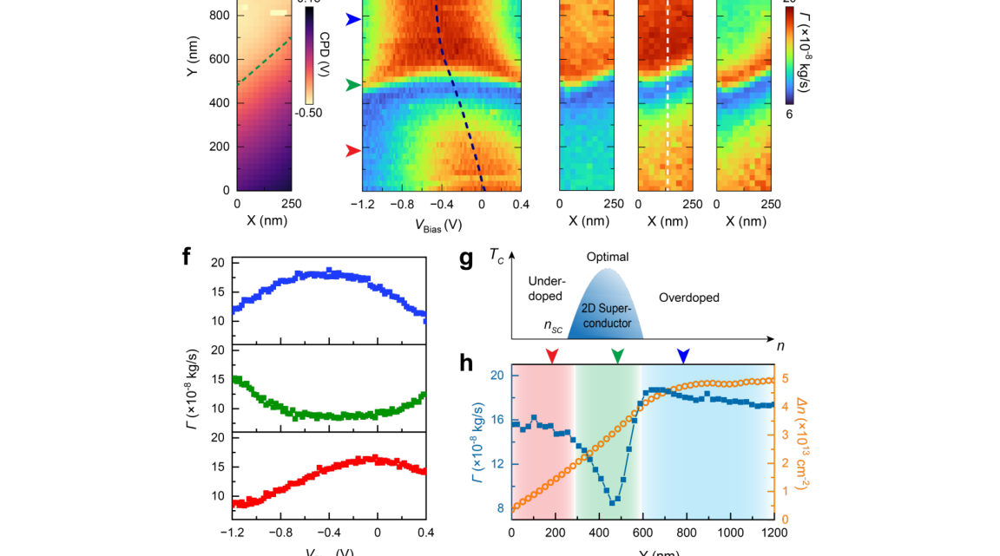
Fig. 5. Spatial mapping of energy dissipation across a patterned channel boundary. (a) CPD map extracted from ∆𝑓 vs. 𝑉Bias parabolic curves at each grid point in the rectangular region outlined by the dashed yellow line in Fig. 4a. The green dashed lines indicate the estimated patterned boundary. (b) The damping coefficient in the Y vs. VBias plane obtained at 𝑋= 125 nm, obtained from the AFM excitation vs. sample bias data. The dark blue dashed line shows the evolution of the CPD as the spatial map crosses the patterned boundary. (c-e) Spatial maps in the XY plane of the damping coefficient at selected sample biases of -900 mV, -300 mV, and 300 mV, respectively. Note the narrow strip where...
Why it may be interesting. not directly relevant
Summary. This paper demonstrates a way to use atomic force microscopy to locally map superconductivity in oxide interfaces. By measuring energy dissipation at millikelvin temperatures, the authors show that superconductivity in patterned LAO/STO is concentrated in narrow edge channels, providing insight into the nature of quantum confinement in these materials.
Detailed structure
**Main problem.** The study aims to resolve whether superconductivity in patterned LaAlO3/SrTiO3 (LAO/STO) interfaces is two-dimensional or one-dimensional and to provide a local probe for the superconducting state.
**Main result.** The researchers successfully used AFM-based dissipation spectroscopy to locally identify superconducting channels, finding that superconductivity is preferentially localized in ~200 nm wide edge channels.
**Method.** Ultra-low temperature (10 mK) non-contact atomic force microscopy (nc-AFM), dissipation spectroscopy, and Kelvin probe force microscopy (KPFM) were used on patterned nanostructures.
**Model / system.** The system consists of LaAlO3/SrTiO3 (LAO/STO) heterostructures with patterned 2D sheets, 1D nanowires, and waveguides, featuring a tunable 2D electron gas.
**Key observables.** Contact Potential Difference (CPD), frequency shift, energy dissipation (damping coefficient), critical current, and critical magnetic field.
**Important parameters / regimes.** Temperature of 10 mK, magnetic fields up to 15 T, and carrier density variations.
**Figures summary.** Figure 1 shows device fabrication and transport properties; Figure 2 displays AFM topography and CPD maps; Figure 3 shows spatial carrier density profiles; Figure 4 and 5 present dissipation mapping, damping coefficients, and their correlation with the superconducting phase diagram.
**Paper structure.** The paper introduces the patterning technique, demonstrates successful device fabrication and topography, maps the electrostatic potential and carrier density, uses dissipation spectroscopy to identify superconducting signatures, and concludes with a discussion on the spatial distribution of superconductivity and the proximity effect.
Abstract
Superconductivity in strontium titanate has remained enigmatic for more than 50 years. The LaAlO$_3$/SrTiO$_3$ (LAO/STO) heterointerface enables systematic dimensional confinement, from a two-dimensional electron gas to quasi-one-dimensional nanostructures, providing access to this quantum state. Transport measurements in patterned devices reveal puzzling phenomena, including width-independent critical currents and anomalous pairing suggestive of one-dimensional behavior, but direct local probes of the patterned interface and its superconducting response have been lacking. Here we use ultralow-temperature non-contact atomic force microscopy, dissipation spectroscopy, and Kelvin probe force microscopy to locally probe signatures of superconductivity in patterned LAO/STO devices. Spatially resolved energy-dissipation measurements reveal superconducting signatures, with features confined in some devices to edge channels approximately 200 nm wide. Dissipation spectra exhibit a characteristic nonlinear bias dependence that provides a local diagnostic of superconductivity, consistent with the intermediate carrier-density regime near the superconducting dome, and persisting up to the critical field. These results establish atomic force microscopy as a local probe of superconductivity in patterned LAO/STO structures and provide a route to addressing longstanding questions about quantum confinement and transport anomalies in correlated oxide nanostructures.
↑ back to top
Authors: Emilio Méndez, Rocio Semino
Type: theory · Category: disordered systems and neural networks · PDF: https://arxiv.org/pdf/2604.28106v1
Analysis basis: abstract only; PDF text extraction failed or PDF unavailable
Why it may be interesting. not directly relevant
Summary. The researchers used machine learning and metadynamics simulations to investigate how different polymorphs of Zn(imidazolate)2 MOFs are selected during synthesis. They discovered that the structural differences leading to specific polymorphs are present as early as the pre-nucleation cluster stage. This provides a new understanding of the mechanistic origins of polymorphism in metal-organic frameworks.
Detailed structure
**Main problem.** Identifying which stage of the solvothermal synthesis process (pre-nucleation clusters vs. amorphous intermediates) determines the final polymorph selection in Zn(imidazolate)2 MOFs.
**Main result.** The study finds that both pre-nucleation clusters and amorphous intermediate structures are polymorph-dependent, suggesting that polymorph selection occurs as early as the pre-nucleation cluster stage.
**Method.** Path collective variable metadynamics simulations using a partially reactive force field, combined with the development and application of neural network classifiers on simulated structural databases.
**Model / system.** Zn(imidazolate)2 metal-organic frameworks (MOFs) undergoing non-classical nucleation via pre-nucleation clusters and amorphous intermediates.
**Key observables.** Structural characteristics of transient and intermediate synthesis structures.
**Assumptions / limitations.** The use of a partially reactive force field to approximate the chemical reactivity during self-assembly.
**Paper structure.** The paper introduces the problem of MOF polymorphism, describes the metadynamics simulation setup and force field, details the construction of structural databases, presents the neural network classification results, and concludes with the implications for polymorph selection timing.
Abstract
Zn(imidazolate)$_2$ metal-organic frameworks (MOFs) exhibit a remarkable degree of polymorphism. Because of their promising industrial applications, many research groups have investigated phase transitions, phase diagram and relative stability of these polymorphs. There is now wide consensus in the research community that these MOFs are solvothermally formed via non-classical nucleation mechanisms, in which pre-nucleation clusters are first formed, followed by an intermediate amorphous structure that subsequently reorganizes to yield the final crystalline MOF. However, no study up to date has uncovered which part of the synthesis process determines the final polymorph obtained. In this work, path collective variable metadynamics simulations performed with a partially reactive force field give insights into mechanistic and thermodynamic aspects of the self-assembly of these MOFs. Databases of transient and intermediate synthesis structures are built from the simulations. By developing and applying neural network classifiers over these databases, it is found that both pre-nucleation clusters and the amorphous intermediate structures are polymorph-dependent. These results suggest that polymorph selection happens as early as the pre-nucleation cluster stage.
↑ back to top
Authors: Rafael R. Del Grande, David A. Strubbe
Type: theory · Category: other · PDF: https://arxiv.org/pdf/2604.28143v1
Analysis basis: full PDF text, analyzed in chunks
📷 Fig 1
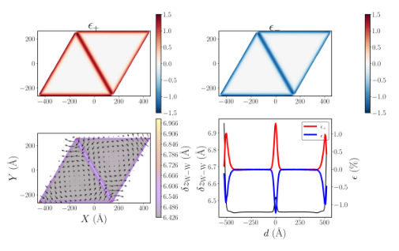
Figure 1: (a) and (b) are the eigenvalues ϵ+ and ϵ−of the strain tensor over the moir´e supercell. (c) atoms displacement field due to relaxation. (d) Strain over the moir´e supercell diagonal. In the AB regions the strain is zero, although it is anisotropic in the AA and SP regions.
📷 Fig 2
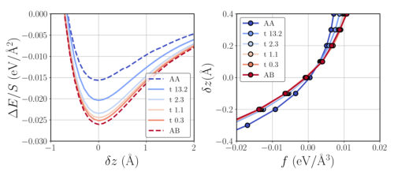
Figure 2: Left: Total cohesive energy density for AA, AB, and twisted bilayer WSe2 for some angles. Small angles are close to AB stacked case while larger angle cases are close to AA stacking. Right: Interlayer distance change as function of the repulsive force density applied on the bilayer. Forces density are calculated by finite differences using the data from left panel.
📷 Fig 3
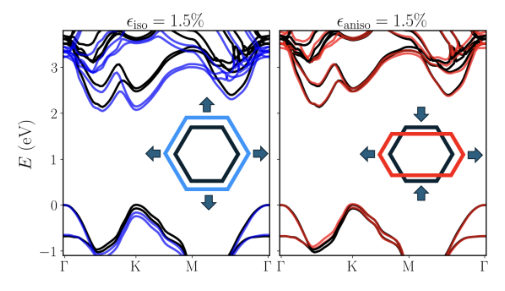
Figure 3: Bandstructure for bilayer WSe2 under isotropic (left) and anisotropic (right) strain
📷 Fig 4
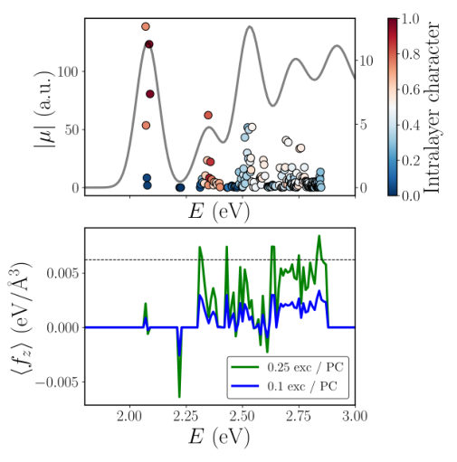
Figure 4: Upper panel: Solid black line: optical absorption, while circles are the exciton transition dipole moment. Color grading goes from blue (interlayer) to red (intralayer) using the intralayer character defined by equation 5. Lower panel: averaged excited state force on layers of bilayer WSe2, (see equation 3). Positive (negative) forces are repulsive (attractive).
Why it may be interesting. not directly relevant
Summary. The researchers developed a multi-scale simulation to explain why light causes larger interlayer expansion in twisted WSe2 compared to untwisted layers. They discovered that twisting weakens the interlayer bond strength and that induced strain enhances repulsive forces from excitons. This work identifies twisted TMDs as highly tunable platforms for studying light-matter interactions.
Detailed structure
**Main problem.** Explaining the microscopic mechanism behind the observed increase in interlayer distance in low-angle twisted bilayer WSe2 when illuminated by light.
**Main result.** The study finds that the combination of a weakened interlayer force constant due to twisting and increased out-of-plane excited state forces (ESF) from in-plane strain explains the enhanced light-induced expansion.
**Method.** A multi-scale approach combining classical force field relaxations (LAMMPS) with ab initio GW/Bethe-Salpeter excited state forces (ESF) calculations.
**Model / system.** Low-angle twisted bilayer WSe2 (specifically 1.1 and 0.3 degree samples) featuring moire supercells with AB, AA, and saddle point regions.
**Key observables.** Interlayer distance change, in-plane strain tensor eigenvalues, exciton transition dipole moments, and excited state force density.
**Important parameters / regimes.** Laser energy of 2.4 eV, fluence of 330 uJ/cm2, exciton concentration of ~8.6 x 10^13 excitons/cm2, and interlayer distance change of 0.1-0.2 A.
**Assumptions / limitations.** The large AB regions in low-angle twisted bilayers can be approximated as periodic AB-stacked 2L WSe2; anisotropic strain in AA/SP regions has negligible effect on electronic properties due to zero trace.
**Figures summary.** Figure 1 shows strain tensors and atomic displacement fields; Figure 2 shows cohesive energy density and interlayer distance change vs force density; Figure 3 shows bandstructures under strain; Figure 4 shows optical absorption and exciton dipole moments with intralayer/interlayer character.
**Paper structure.** The paper introduces the problem of light-induced structural changes, describes the multi-scale computational methodology, presents results on atomic reconstruction and strain, analyzes the nature of excited state forces, and concludes by synthesizing the mechanism.
Abstract
Exciton-phonon interactions in transition metal dichalcogenides (TMD) are strong and lead to phenomena such as coherent phonon generation. When stacked and twisted, their properties can be tuned by the twisting angle. In experiments with 1.1$^\circ$ twisted 2L WSe$_2$, a change of 0.1 Å in the interlayer distance was observed when light was shone on this material, and here we explain the microscopic mechanism behind this. Theoretical works to study such systems are limited because the Moiré unit cell is too large. To overcome this, we combined classical force field relaxations with our implementation of ab initio GW/Bethe-Salpeter excited state forces (ESF). From the relaxations we found that the low-angle twisting induced an in-plane strain field, the AB regions are large enough to be simulated as periodic AB stacked 2L WSe2, and the interlayer force constant becomes softer in relation to the perfect AB stacking. From the ab initio ESF we obtained that the in-plane strain increases the out of plane ESFs. Those two effects combined, the weakening of the interlayer force constant and strain dependence of the ESF, make light-induced changes in the interlayer distance of twisted 2L WSe2 stronger than in the perfectly stacked case, in agreement with experimental observations. Therefore, our results show that the exciton-phonon interactions can be tuned in twisted 2L TMDs and can be observed experimentally, which makes those materials excellent platforms to study light-induced changes in materials.
↑ back to top
Authors: Heda Zhang, Nikolai Peshcherenko, Ning Mao, Nianlong Zou, Jiaqiang Yan, Claudia Felser, Yang Zhang
Type: both · Category: other · PDF: https://arxiv.org/pdf/2604.28091v1
Analysis basis: abstract only; PDF text extraction failed or PDF unavailable
Why it may be interesting. not directly relevant
Summary. The researchers observed a nonlinear Hall effect in the chiral Weyl semimetal CoSi, even though the standard Berry curvature dipole is forbidden by symmetry. They found that the effect arises from the skew scattering of electron wave packets due to Berry monopoles, a process analogous to the classical Magnus effect. This discovery provides a new way to probe topological features in high-symmetry materials.
Detailed structure
**Main problem.** Exploring mechanisms for the nonlinear Hall effect (NLHE) in high-symmetry chiral lattices where the Berry curvature dipole is symmetry-forbidden.
**Main result.** Observation of a robust NLHE in the chiral Weyl semimetal CoSi, attributed to the skew scattering of self-rotating electron wave packets driven by Berry monopoles.
**Method.** Experimental detection using focused ion beam-fabricated crossbar devices combined with theoretical analysis of skew scattering and topological transport.
**Model / system.** The chiral Weyl semimetal CoSi, characterized by its topological Weyl nodes and a crystal symmetry that forbids the Berry curvature dipole.
**Key observables.** Second-harmonic Hall voltage, temperature-dependent sign reversal, and linearly field-dependent modulation of the NLHE signal.
**Important parameters / regimes.** Carrier mobility, temperature, and magnetic field strength.
**Assumptions / limitations.** The nonlinear Hall conductivity is driven by the skew scattering of self-rotating electron wave packets.
**Paper structure.** Introduction to NLHE and symmetry constraints, experimental setup using FIB-fabricated devices, observation of second-harmonic Hall voltage, theoretical derivation of the Magnus-like skew scattering mechanism, and analysis of temperature and field dependence.
Abstract
The nonlinear Hall effect (NLHE) connects crystalline symmetry to quantum geometry, offering a probe of band topology beyond linear transport. While most studies have focused on the Berry curvature dipole in low-symmetry crystals, mechanisms that directly probe Berry monopoles in higher-symmetry chiral lattices remain unexplored. Here, we report the observations of the NLHE in the chiral Weyl semimetal CoSi, a platform where the Berry curvature dipole is symmetry-forbidden. By employing focused ion beam-fabricated crossbar devices, we detect a robust second-harmonic Hall voltage under zero magnetic field, hosting all key signatures of the NLHE. Theoretical analysis attributes the nonlinear Hall conductivity to skew scattering of self-rotating electron wave packets, whose chirality is dictated by the underlying band topology, a process reminiscent of the classical Magnus effect. Furthermore, the NLHE signal exhibits a temperature-dependent sign reversal, and a strong, linearly field-dependent modulation that grows with carrier mobility, directly reflecting the topological Weyl nodes distribution near the Fermi level. These findings establish CoSi as a platform for Berry monopole-driven nonlinear transport, demonstrating a skew-scattering route to topological nonlinear Hall responses that bypasses conventional symmetry constraints.
↑ back to top
← Index
· ← Previous · Next →